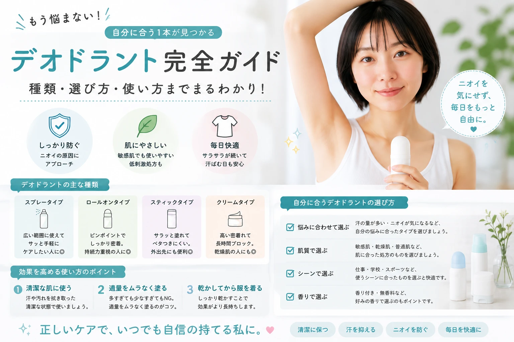

デオドラント完全ガイド
汗・ニオイ対策を初心者向けに解説
汗や体臭は誰にでも起こる自然な現象ですが、毎日のケアを取り入れることで、清潔感を保ちやすくなります。 この記事では、汗やニオイの原因、制汗剤とデオドラント剤の違い、正しい使い方、毎日できるニオイ対策まで初心者にも分かりやすく解説します。
この記事でわかること
- ✔ 汗と体臭の仕組み
- ✔ 制汗剤とデオドラント剤の違い
- ✔ 自分に合ったアイテムの選び方
- ✔ 正しい使い方
- ✔ ニオイを予防する生活習慣
- ✔ よくある疑問への回答
デオドラントとは？
デオドラントとは、汗や体のニオイをケアするために使用するアイテムのことです。 汗そのものを完全になくすのではなく、汗による不快感やニオイを抑えることを目的として使用します。
特にワキ・首・胸元・足などは汗や蒸れが気になりやすいため、清潔に保ちながら適切なケアを行うことが大切です。
デオドラントケアの基本
- ✔ 汗をかいたら清潔にする
- ✔ 肌を乾かしてからアイテムを使用する
- ✔ 使用する部位に合った商品を選ぶ
- ✔ 汗をかいた後は必要に応じてケアする
汗・ニオイの原因

汗は体温調節などのために分泌されるもので、汗そのものが必ずしも強いニオイを持っているわけではありません。 皮膚にいる細菌などの影響や、汗・皮脂・汚れなどが混ざることでニオイが気になることがあります。
ニオイが気になりやすい主な原因
- 汗をかいたまま長時間過ごす
- 皮脂や汚れが肌に残っている
- 衣類の中が蒸れている
- 靴や靴下の中が蒸れている
- 運動後などに汗をそのままにする
汗をかいたら放置しない
汗をかいた後は、タオルや汗拭きシートなどでやさしく汗を拭き取り、肌を清潔な状態に保ちましょう。 ゴシゴシこすると肌への刺激になるため、やさしく押さえるように拭くのがおすすめです。
制汗剤とデオドラント剤の違い
「制汗剤」と「デオドラント剤」は似たような商品に見えますが、目的が異なります。 商品の表示や使用方法を確認して、自分の目的に合ったものを選びましょう。
| 種類 | 主な目的 | おすすめの使い方 |
|---|---|---|
| 制汗剤 | 汗を抑えることを目的とする | 汗をかきやすい部位に使用 |
| デオドラント剤 | ニオイをケアすることを目的とする | ニオイが気になる部位に使用 |
選ぶときのポイント
「汗の量が気になる」のか「ニオイが気になる」のかによって、商品を選ぶ基準を変えてみましょう。 両方が気になる場合は、両方の機能を備えた商品もあります。
デオドラントの種類
デオドラントアイテムには、スプレー・ロールオン・スティック・シートなどさまざまなタイプがあります。 使う場所やタイミングに合わせて選ぶと、毎日のケアを続けやすくなります。
| タイプ | 特徴 | おすすめのシーン |
|---|---|---|
| スプレー | 広い範囲に使いやすい | 外出前・スポーツ後 |
| ロールオン | 狙った部分に塗りやすい | ワキなど |
| スティック | 直接塗りやすい | 外出前 |
| シート | 汗やベタつきを拭き取れる | 外出先・運動後 |
初心者なら？
外出先で手軽に使いたいならシートタイプ、ワキなど特定の部分をしっかりケアしたいならロールオンやスティックタイプなど、用途から選ぶと分かりやすいでしょう。
デオドラントの正しい使い方
デオドラントは、汗をかいてから慌てて使うよりも、使用方法を守って清潔な肌に使うことが基本です。 商品ごとに使用方法が異なるため、パッケージの表示を確認して使用しましょう。
STEP1 肌を清潔にする
汗や皮脂が気になる場合は、シャワーや入浴で肌を清潔にします。 外出先では汗拭きシートなどで汗をやさしく拭き取ります。
STEP2 肌を乾かす
汗や水分が残った状態ではなく、肌を清潔で乾いた状態にしてから使用しましょう。
STEP3 適量を使用する
商品に記載されている使用量・使用方法を守ってください。 多く使えば使うほど効果が高くなるとは限りません。
STEP4 必要な部位に使用する
ワキや足など、ニオイや汗が気になる部位を中心に使用します。 顔や粘膜、傷・湿疹などがある部分には、商品の使用可能部位を確認せずに使用しないようにしましょう。
基本のポイント
- ✔ 清潔な肌に使用する
- ✔ 使用前に肌を乾かす
- ✔ 商品の使用量を守る
- ✔ 使用可能な部位を確認する
ワキのニオイ対策

ワキは汗をかきやすく、衣類の中で蒸れやすい部分です。 毎日の入浴で清潔に保ち、汗をかいたときには早めにケアすることを心がけましょう。
ワキケアの基本
- ① 入浴時にやさしく洗う
- ② 水分をしっかり拭き取る
- ③ 清潔で乾いた肌にデオドラントを使用する
- ④ 汗をかいたら必要に応じて拭き取る
- ⑤ 衣類も清潔に保つ
足のニオイ対策
足は靴や靴下の中で蒸れやすく、汗や湿気がこもりやすい部位です。 足を清潔に保つだけでなく、靴や靴下のケアも一緒に行いましょう。
足を清潔にする
入浴時には足の裏だけでなく、指の間までやさしく洗いましょう。 洗った後は水分をしっかり拭き取ります。
靴を乾燥させる
同じ靴を連日履き続けるのではなく、複数の靴をローテーションすると、靴の中を乾燥させる時間を作れます。
靴下を交換する
汗をたくさんかいた場合は、必要に応じて靴下を交換しましょう。 清潔な靴下を使用することも足元のニオイ対策の基本です。
足元の3つのポイント
- ✔ 足を清潔にする
- ✔ 指の間までしっかり乾かす
- ✔ 靴・靴下も清潔に保つ
衣類のニオイ対策
汗をかいた衣類を長時間着用していると、衣類に汗や皮脂などが残り、ニオイが気になることがあります。 汗をかいた日は、できるだけ早めに洗濯しましょう。
| 対策 | ポイント |
|---|---|
| 着替える | 汗をかいた衣類を長時間着用しない |
| 洗濯する | 汗をかいた衣類を早めに洗う |
| 乾燥させる | 洗濯後はしっかり乾かす |
| 衣類を選ぶ | 季節やシーンに合わせて通気性も意識する |
毎日のニオイ対策
デオドラントアイテムだけに頼るのではなく、毎日の生活習慣を整えることも清潔感を保つための大切なポイントです。
今日からできる基本ケア
- ✔ 毎日入浴して肌を清潔にする
- ✔ 汗をかいたら早めに拭き取る
- ✔ 汗で濡れた衣類は必要に応じて着替える
- ✔ 靴や靴下を清潔に保つ
- ✔ デオドラントアイテムを正しく使用する
- ✔ 肌をゴシゴシこすりすぎない
部位別にケアする
| 部位 | おすすめのケア |
|---|---|
| ワキ | 清潔にして乾かしてからデオドラントを使用 |
| 足 | 指の間まで洗い、しっかり乾燥させる |
| 首・胸元 | 汗をかいたらやさしく拭き取る |
| 衣類 | 汗をかいたら着替え、早めに洗濯する |
季節ごとの汗・ニオイ対策
春・夏
気温が高くなるにつれて汗をかきやすくなります。 外出前のデオドラントケアに加えて、汗をかいた後の拭き取りや着替えも意識しましょう。
秋
涼しくなっても、運動や室内の暖房などで汗をかくことがあります。 季節が変わったからといってケアをやめず、必要に応じて続けましょう。
冬
厚着や暖房によって、意外と汗をかくことがあります。 衣類の中が蒸れないよう、温度調節や着替えを意識することも大切です。
やってはいけないデオドラントケア
ニオイが気になるからといって、デオドラントを過剰に使用したり、肌を強くこすったりするのは避けましょう。 肌への刺激を減らしながら、商品に記載された使用方法を守ることが大切です。
NGポイント
- 汗や汚れが残った肌に重ね続ける
- 必要以上に大量に使用する
- 肌を強くこすって汗を拭き取る
- 傷や炎症がある部分に使用する
- 使用可能部位を確認せずに使う
- 肌に異常が出ても使用を続ける
使用中に赤み・かゆみ・刺激などの異常が出た場合は使用を中止し、必要に応じて皮膚科などの医療機関へ相談しましょう。
よくある質問
Q. デオドラントは毎日使っても大丈夫ですか？
商品によって使用方法や使用頻度が異なります。 パッケージに記載されている使用方法を確認し、肌の状態を見ながら使用しましょう。
Q. 汗をかいてからデオドラントを使ってもいいですか？
まず汗をタオルや汗拭きシートなどでやさしく拭き取り、商品が指定する使用方法に従って使用しましょう。
Q. スプレーとロールオンはどちらがおすすめですか？
どちらが優れているというより、使用する場所や好みで選ぶとよいでしょう。 広い範囲に使いやすいものを選びたいならスプレー、ワキなど狙った部分に使いたいならロールオンなどが選択肢になります。
Q. 足のニオイが気になります。どうすればいいですか？
足を清潔に洗い、特に指の間までしっかり乾かすことが基本です。 靴や靴下も清潔に保ち、同じ靴を連日履き続けないようにするなど、足元の蒸れ対策も意識しましょう。
Q. ニオイが強くて何をしても改善しません。
セルフケアを続けても強いニオイが気になる場合や、急にニオイが変化した場合などは、皮膚科などの医療機関に相談することも検討しましょう。
まとめ
汗やニオイは誰にでも起こる自然な現象です。 大切なのは、汗をかいたら清潔にすること、肌を乾燥させてから適切なデオドラントアイテムを使用すること、そして衣類や靴など身の回りのものも清潔に保つことです。
今日から始める3つのポイント
- ✔ 汗をかいたら早めに拭き取る
- ✔ 清潔で乾いた肌にデオドラントを使用する
- ✔ 衣類・靴・靴下も清潔に保つ
自分の生活スタイルや肌に合った方法を選び、無理なく続けられるデオドラント習慣を作っていきましょう。
おすすめデオドラントアイテム
デオドラントアイテムは、使用する場所やシーンに合わせて選ぶと毎日のケアを続けやすくなります。